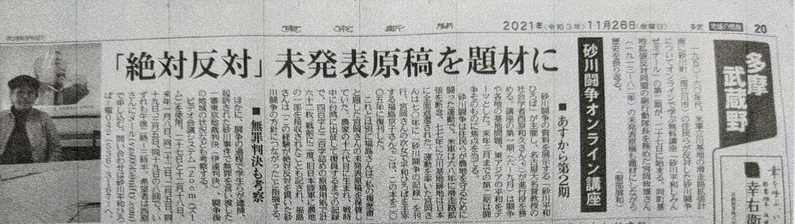

砂川平和しみんゼミナール（平和しみんゼミ）
砂川平和しみんゼミナールの概要と今後の予定
2022年4月11日
「砂川平和ひろば」の活動概要についての記事で
以下の三本の柱を紹介しました。
１ 資料館の運営
砂川に関する調査研究・資料収集・常設展示
２ 平和集会・フィールドワークの企画運営
３ 地域の居場所づくり
「ひろば食堂ふらっと」「無料塾ふらっと教室」
その１と２にまたがる活動として
ちょうど1年前の2021年5月に
平和と共生の問題を考える「砂川平和しみんゼミナール」
が始まりました。
砂川平和しみんゼミの趣旨と開催実績
国際社会学などを専門とする社会学者の
西原和久さんが 中心となって
以下のテーマと趣旨で 企画されたものです。
①砂川闘争、立川基地、横田基地等と東京・関東の基地問題
②沖縄・日本・北東アジアにおける基地と平和と共生の問題
③アジア太平洋地域と世界における基地と平和と共生の問題
以上のテーマに関連する、交流会（参加者の情報交換会）
読書会／勉強会 講演会/研究発表会などを開催。


↑ 近年出版された西原和久著書・共著書
科研費報告書を兼ねた単著として
『沖縄から学ぶ社会思想とトランスナショナリズムの展望
ーーいま平和社会学の構築に向けてアジアで問うべきこと』が公刊予定
2022年3月までに、以下のテーマで
全16回の平和しみんゼミが開催されました。
2021年度前期：第１期（全８回）
砂川から考える基地と平和と共生
2021年度後期：第２期（全８回）
砂川闘争の意義を学び直す
――東アジアの平和と共生のために

↑ 砂川平和しみんゼミの第２期開講について報じる
{kind=link}
2021年11月26日付『東京新聞』多摩武蔵野版
続く第３期は 2022年5月21日～8月6日
の予定です。
砂川平和しみんゼミ 第３期 予定
「砂川闘争から考える平和展望」をテーマとして
以下の日程と〈題目〉で 開催します。
2022年度前期６回： 第1、第3土曜日
午後2時～3時半（対面＋Zoomオンライン開催）
①５月２１日：第１回ゼミ（通算17回）
西原和久（砂川平和ひろば・平和しみんゼミ担当）
〈平和問題と平和しみんゼミの取り組み〉
②６月０４日：第2回ゼミ（通算18回）
高原太一（東京外語大大学院修了・砂川闘争論で博士号）
〈世界史のなかの砂川闘争〉
③６月１８日：第3回ゼミ（通算19回）
土屋源太郎（伊達判決を生かす会・共同代表）
〈砂川闘争の前と後-―過去・現在・未来を問う〉
④７月０２日：第4回ゼミ（通算20回）
元山仁士郎（予定：一橋大学院生・県民投票の会元代表）
〈辺野古をめぐる県民投票とそれ以後〉
（仮題）
⑤７月１６日：第５回ゼミ（通算21回）
趙誠倫（済州大学元教授・戦争犠牲者研究・平和研究）
〈沖縄と済州、そして南洋諸島から考える平和〉
（仮題）
⑥８月０６日：第６回ゼミ（通算22回）
まとめと討論（司会：西原）
（８月下旬から西原の海外調査予定のため今期は6回で終了）
＊「砂川平和しみんゼミ」の新規参加希望者は
西原までメール（vzs00645@nifty.com）ください。
参加費は無料
対面ゼミへの参加は自由ですが
オンライン参加希望の方は初回に限り事前連絡が必要です。
Zoomへのアクセス方法等をお知らせします。
砂川平和ひろば
所在地：〒190-0031立川市砂川町1-38-1
担当者：西原和久（vzs00645@nifty.com）
砂川平和しみんゼミナール（平和しみんゼミ）. 2022年5月12日. 砂川平和ひろば公開記事アーカイブ. https://sunagawa-heiwa-archive.github.io/articles/ameblo-12741836609.html. Original: https://ameblo.jp/2021fukuoka-ameba/entry-12741836609.html